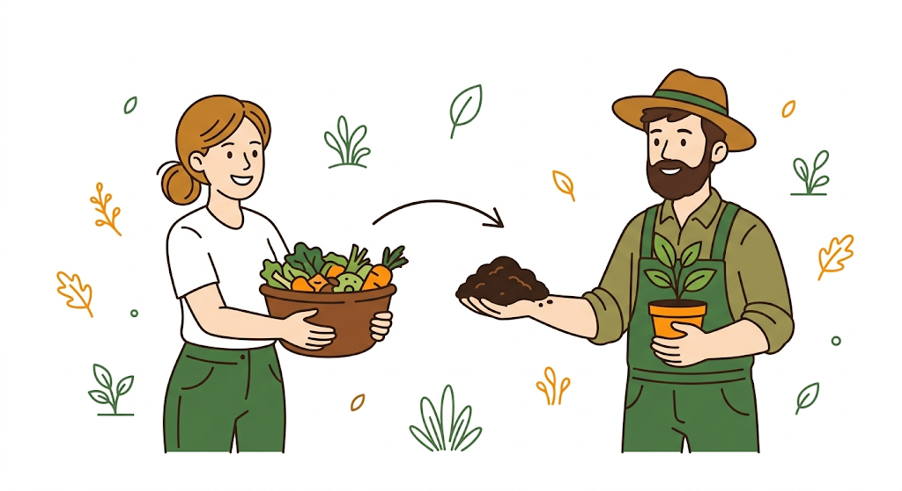
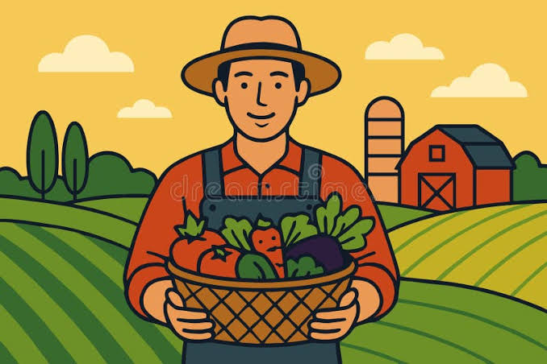
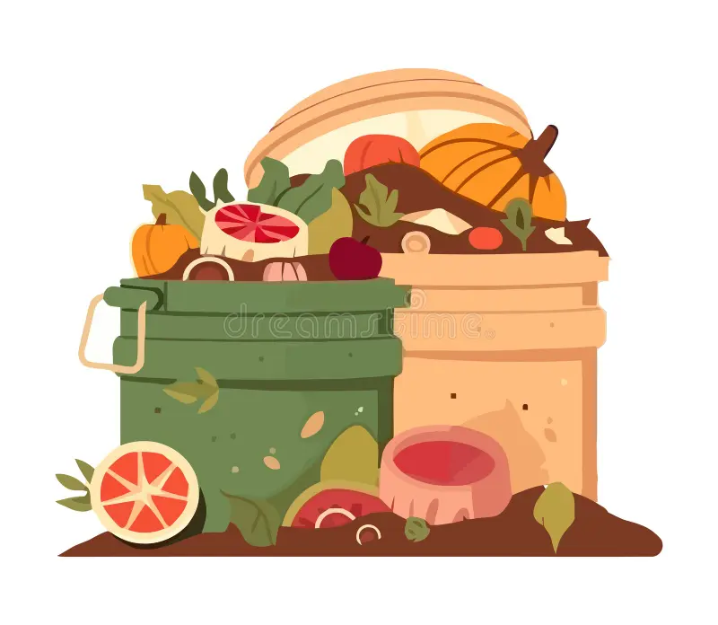

GreenLoop connects households and market vendors who have organic waste with farmers nearby who need it for compost, so nothing useful goes to a dump.

Most of the solid waste produced around Bamenda every day is organic, vegetable peels, food scraps, market refuse. At the same time, farmers nearby often can't easily get affordable compost. Those two problems sit right next to each other, but nothing connects them. GreenLoop is that connection: a simple way for people to find each other by quarter, instead of relying on chance.


A provider lists waste they have. A farmer lists what they need. Both take less than a minute.
GreenLoop sorts listings by quarter, so nearby matches always show up first.
Reach out directly, agree on pickup, and mark it complete once the waste changes hands.
Matches Completed
Listings Active Right Now